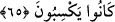

65. O gün onların ağızlarını mühürleriz; yaptıklarını bize elleri anlatır, ayakları
da şâhidlik eder.
“O gün onların ağızlarını mühürleriz” “__WORD__ aslında mühür vurmak demektir. Sonra
mecâzen men’ etme için kullanılmıştır.
Kâfirlerin çirkin hallerini zikretmek artık onlardan yüzçevirmeyi ve onların bu
hallerini başkalarına hikâye etmeyi gerektirdiğini bildirmek için bu âyette muhâtab
siygasından gâib/üçüncü şahıs siygasına geçilmiştir. Ayrıca bunda bu durumun onların
ağızlarının mühürlenmesini gerektiren hususlardan olduğuna da îmâ vardır. Çünkü hitap,
cevap almak içindir. Halbuki onların cevap imkanları tamamen ortadan kalkmıştır.
Mânâ
şöyledir:
Onların
ağızlarını
konuşmaktan
men’
ederiz,
ağızlarını
konuşamayacakları bir hâle getiririz. Bu durumda sanki ağızları mühürlenmiş gibi olur.
Bunun üzerine diğer uzuvları kendilerinden meydana gelen günahları îtiraf eder.
“Yaptıklarını bize” bizim onları konuşturmamızla “elleri anlatır, ayakları da
şâhidlik eder.” Bu dört organ yaptıkları günahları söyler. Aslında burada kasdedilen
bütün uzuvlardır. Çünkü her uzuv kendisinden meydana geleni îtiraf eder.
Bugün onların ağzına mühür koyarız. Çünkü onlar: ‘Müşrik olmadık, peygamberleri
yalanlamadık ve şeytana tapmadık.’ derler. Onların dünyada yaptıkları ile ilgili olarak
elleri bize konuşur, ayakları şâhidlik eder.
Bazıları der ki: “Ey Âdem oğulları! Size şeytana tapmayın, çünkü o sizin apaçık bir
düşmanınızdır.” demedim mi?” denilince kâfirler bunu inkâr ederler ve “Rabbimiz
Allah hakkı için biz ortak koşanlar değildik.” (el-En’âm, 6/23) Biz senden başka
hiçbir şeye tapmadık. Münkerât (dînen câiz olmayan şeyler) konusunda şeytana itâat
etmedik” derler. Bunun üzerine ağızları mühürlenir. Diğer organları işledikleri
günahları îtiraf ederler. Bu mühürlenme kâfirlerden ebedî olarak ayrılmaz. Dünyada
kalpleri mühürlenmiştir. Nitekim Allah Teâlâ şöyle buyurur: “Allah onların kalplerini
… mühürlemiştir.” (el-Bakara, 2/7) Âhirette ise ağızları mühürlenecektir. Kalplerinin
mühürlü olduğu şu anda onlar sözlerini ağızlarıyla (geveleyerek) söylerler. Nitekim
Allah Teâlâ şöyle buyurur: “Bu onların ağızlarıyla geveledikleri sözlerdir.” (et-
Tevbe, 9/30) Allah onların ağızlarını da mühürleyince artık diğer organlarıyla
konuşmaları zorunlu oldu. Çünkü insan kalp, dil ve organlardan başka bir şeye mâlik
değildir. Kalp ve dil mühürlenince iş uzuv ve organlara düşer.
Keşfü’l-esrâr’da der ki: “Kıyamet günü kâfirlerin amelleri kâfirlere gösterilir, amel
defterleri de. O kepazeliklerini görürler. Dağlar büyüklüğünde yaptıklarını inkâr
ederler ve düşmanlık beslerler. Meleklere yalan iddiâda bulunurlar. Biz bu defterlerde
yazılı olanları yapmadık; bizim amellerimiz değil, derler. Komşuları onlar hakkında
şâhidlik ederler; onları yalancılıkla itham ederler. Ailesi, kabilesi şâhidlik eder, onları
da yalancı olmakla suçlarlar. Sonra âlemlerin Rabbi olan Allah onların ağızlarına